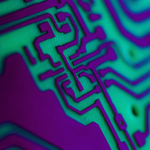

Darktec · nRF52840

Данный флешер позволяет собрать свою прошивку с предопределёнными параметрами.
Только латиница! Если поле ввода пустое, имя ноды будет Darktec Companion BLE.
Поля предварительно заполнены настройками для Краснодарского края и Адыгеи. Ниже вы можете изменить их.
Дефолт: 869.075 МГц / 62.5 kHz / SF8 / CR8 / 22 dBm. Свои значения попадут в прошивку только после сборки.
UF2 — копирование на DFU-диск с компьютера. ZIP для BLE-OTA — для обновления, например, через мобильное устройство.
RESET — появится USB-диск DFU..uf2 на этот диск.При нажатии на кнопку «Только DFU» произойдёт прошивка методом копирования файла обновления на диск, который появляется при переходе в режим DFU.
Режим DFU включается двойным нажатием кнопки
RESET.
Если у вас старый бутлоадер (версия меньше 0.6.1), обновите его, предварительно переведя устройство в режим DFU.
Нажатие кнопки «Прошить» прошивает устройство через Serial-интерфейс (не DFU). Для этого необходимо будет выбрать Serial интерфейс вашего подключённого модуля.